Комфортни ловни хижи в сърцето на природата

Благоприятните климатични условия на района и отличната хранителна база в стопанството, оказват положително влияние върху качеството на трофеите от популациите на едър дивеч. Сред ...
Виж повече
Ловният дом "Батин" е масивна двуетажна сграда, обърната към българския бряг на р. Дунав. До острова се стига с лодки, които са на разположение на гостите на дома. Къщата може да п...
Виж повече
ДГС Сеслав предлага отлични условия за групов лов на фазани фермерско производство с неограничен отстрел, чрез търсене с куче. От 1963г. функционира фазанрия с капацитет за развъжд...
Виж повече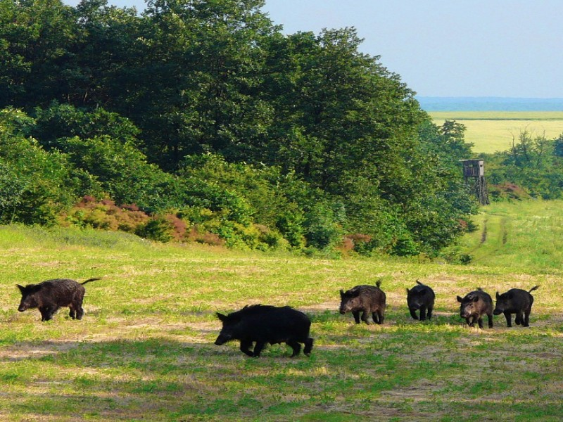
Държавно горско стопанство Сеслав се намира в Североизточна България, в центъра на Западното Лудогорие на 50 км югоизточно от гр. Русе. Най-близкото летище е на 160 км в град Варна...
Виж повече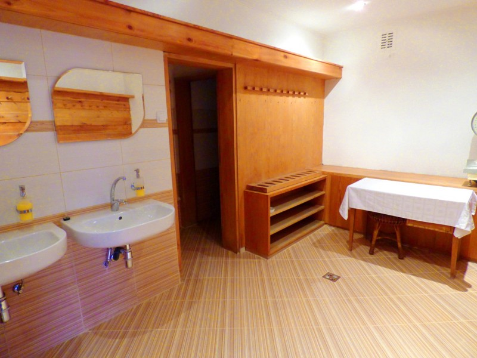
В лова на дива свиня също има отлични резултати, тъй като се среща в значително количество. Успешно се ловува индивидуално от чакало, където е възможен отстрелът на сериозни трофеи...
Виж повече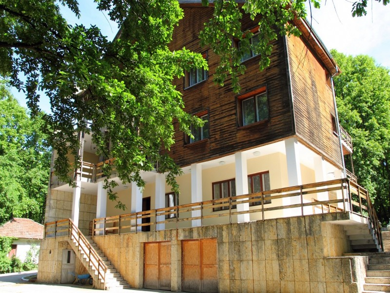
Богатата хранителна база определя изключително успешен лов на дива свиня (на гонка и на чакало). Глиганите са с трофеи 20 26 см. (128,25 CIC (26,1 см), 121,10 CIC (22,7 см), 122,8...
Виж повече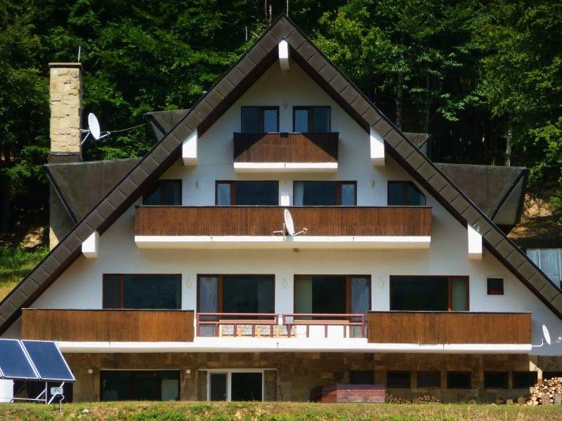
В близост се намират градове с богато историческо минало и интересни туристически обекти: Габрово, Велико Търново, Ловеч, Троянски манастир и Дряновски манастир....
Виж повече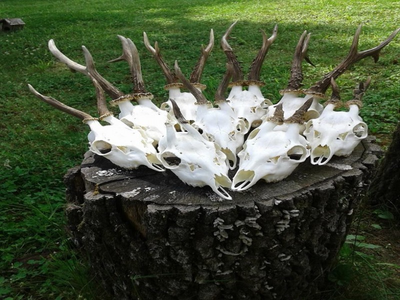
Еднодневни разходки могат да се организират до алевийското тюрбе Демир баба теке, който е част от историко-археологическия резерват Сборяново, тракийските могили в близост до село ...
Виж повече
Двуетажната сграда е построена в старинен стил, широката веранда с дървен парапет на втория етаж привлича погледа на всички гости. Втори дом е категоризиран като Ловна резиденция с...
Виж повечеБлагоприятните климатични условия на района и отличната хранителна база в стопанството, оказват положително влияние върху качеството на трофеите от популациите на едър дивеч. Сред най-добрите трофеи, добити в ДЛС Дунав са: благороден елен (13,5 кг, оценен на 250 CIC точки), сръндак 505 гр., както и глиган, чийто трофей е с повече от 220 CIC точки.
ДЛС Дунав предлага отлични условия за лов на фазани на полигон чрез търсене с кучета. Фазаните са главно фермерско производното, но се срещат и диви в природата. Фазанарията функионира от 1975 г. Капацитетът и за развъждане е 40 000 хил., а за отглеждане е 15 000 хил. фазана годишно. В момента се отглежда главно корейски фазан, но условията позволяват развъждането и на други видове в зависимост от търсенето.
Едноетажната масивна сграда на ловния дом е разположена в липова гора в ловностопански район "Батаклията". Тук едновременно могат да се настанят 8 души в два апартамента с камини и две двойни стаи. Двойните стаи са разположени в бунгала съвсем близо до сградата. Всяка стая има предверие с голям гардероб, две легла и самостоятелен санитарен възел. Просторната залата за хранене, разполага с камина, голям телевизор и свързва двата апартамента. Пред ловния дом има кът за почивка и паркинг.
Ловната площ възлиза на 5 627 ха., разделена на четири ловностопански района. Теренът тук е хълмисто-равнинен, а средната надморска височина варира от 344 m във високите части в близост до село Царевец до 15 m при островите в река Дунав. За района са характерни главно липови гори, следвани от акация и габър.
Любителите на риболова няма да останат разочаровани, ако решат да хвърлят въдици в р. Дунав. Могат да се надяват на добър улов на шаран, толстолоб, амур, платика, каракуда. За желаещите се организират фотолов и екскурзии до природните и културните забележителности в региона.
Най-изветсните са: Ивановските скални църкви, Басарбовски манастир, средновековната крепост "Червен". Трите обекта могат да бъдат посетени в рамките на един ден.
Основните видове дивеч са: благороден елен, дива свиня, сърна, заек, фазан, както и вълк, чакал и лисица.
По-специално внимание заслужава да се отдели на лова на благороден елен и сръндак. Брачният период на благородния елен стартира в началото на месец септември и продължава до първите дни от месец октомври. През това време се отстрелват 10 до 15 трофейни благородни елена. Най-добрият период за лов на качествени трофеи от сръндак пък е през месец май. Трофеите обикновено варират от 300 до 450 гр.


Ловният дом "Батин" е масивна двуетажна сграда, обърната към българския бряг на р. Дунав. До острова се стига с лодки, които са на разположение на гостите на дома. Къщата може да приеме едновременно 13 посетители в един апартамент и пет двойни стаи. Всяка стая разполага с две отделни легла и възможност за едно допълнително, голям гардероб и баня с душ кабина. На първия етаж е разположена залата за хранене и къта за отдих с камина. Френските прозорци дават възможност на гостите да се насладят на прекрасната гледка към Дунава. Огромната закрита тераса по протежение на сградата е приятно място за отдих след вълнуващ ловен ден. Тук е и просторният апартамент, които също разполага с камина и достъп до терасата. На втория етаж се намират четири от стаите и зимната градина с гледка към една от дивечовите ниви на острова.
Любителите на риболова няма да останат разочаровани, ако решат да хвърлят въдици в р. Дунав. Тук има доста подходящи места, откъдето могат да се надяват на добър улов на шаран, толстолоб, амур, платика, каракуда.
На 2 км пеша от ловния дом се намира 300-годишният лонгозен дъб. Дебелината на ствола му при 1,2 м над земята е 6 м. Дървото е защитен обект. Разходката до него е освежаваща, а гледката към румънския бряг - уникална. Гр. Русе се намира на 60 км от острова. В близост до града се намират: Ивановските скални църкви, Басарбовски манастир, средновековната крепост "Червен". И трите обекта могат да бъдат посетени в рамките на един ден.
Най-близкото международно летище в Букурещ, Румъния е само на 130 км. Варна е на 240 км, а София на - 300 км.
Общата ловностопанска площ на ДЛС Дунав е 5 627 ха., разделена на 4 ловностопански района. Растителността на острова е представена главно от тополови култури, следвани от върба и бряст.
Остров Батин е част от територията на държавно ловно стопанство "Дунав", която се простира от източната част на Дунавската равнина и достига до най-северните части на Поповско Разградските и Самуиловските височини. ДЛС Дунав е единственото стопанство в България, което разполага с ловен дом на остров. С площ от 4,2 km2 Батин е четвъртият по големина български остров, разположен между 522,5 и 529,5 км по течението на река Дунав. Има елипсовидна форма с дължина от 6 км и максимална ширина 1,8 км. Островът е разположен северно от село Батин, област Русе на около 200 м от българския бряг.
През топлите месеци е удоволствие да се релаксира на чист въздух в беседката с барбекю само на метри от сградата. Гостоприемната атмосфера се допълва от изискана кухня и вежлив персонал.
Сред най-добрите трофеи, отстрелвани в ДЛС Дунав са: благороден елен (13,5 кг, оценен на 250 CIC точки), сръндак 505 гр., както и глиган, чийто трофей е с повече от 220 CIC точки. Положително влияние върху качеството на трофеите оказват благоприятните климатични условия на района и добрата хранителна база в стопанството. ДЛС Дунав предлага отлични условия за лов на фазани на полигон чрез търсене с кучета. Фазаните са главно фермерско производното, но се срещат и диви в природата. Фазанарията функионира от 1975 г. Капацитетът и за развъждане е 40 000 хил., а за отглеждане е 15 000 хил. фазана годишно. В момента се отглежда главно корейски фазан, но условията позволяват развъждането и на други видове в зависимост от търсенето.


ДГС Сеслав предлага отлични условия за групов лов на фазани фермерско производство с неограничен отстрел, чрез търсене с куче. От 1963г. функционира фазанрия с капацитет за развъждане и отглеждане на 10 000 - 12 000 птици годишно. Отглеждат са 2 вида фазани корейски и монголски. Изграден е полигон за обучение на ловни кучета-птичари.
Държавно горско стопанство Сеслав се намира в Североизточна България, в центъра на Западното Лудогорие на 50 км югоизточно от гр. Русе. Най-близкото летище е на 160 км в град Варна, а столицата София е 350 км.
Ловен дом Елен се намира на 10 км от гр. Кубрат, област Разград. Двуетажната сграда е разположена на брега на голям язовир и предлага 1 единична стая, 2 двойни стаи с тераси към язовира и 1 апартамент. Всяка стая има самостоятелен санитарен възел, хладилник, сателитна телевизия и климатик. Отоплението е локално. На първият етаж са залата за хранене и къта за почивка с камина. Пред ловния дом има просторна тераса с изглед към язовира, а зад него е паркинга.
Ловът на дива свиня от чакало и на гонки предлага незабравими емоции и ценни трофеи. Средната дължина на глигите е 20-24 см, а най-значимият трофей добит в стопанството е с дължина от 32 см.
Най-големият трофей от благороден елен, добит в района на стопанството, е с тегло 13.6 кг и оценка по СIС 238 точки. Годишно могат да се отстрелват 10-12 благородни елена със средно тегло 9-11 кг и единични екземпляри с тегло до и над 12 кг.
Най-големият трофей от сръндак е 539 гр. и оценка 148 CIC точки, обикновено на сезон се отстрелват между 12-15 сръндака със средно тегло 300-450 гр. и единици с тегло до и над 500 гр.
На територията на стопанството се намира Историко-археологически резерват "Сборяново". Могат да се организират посещения на Ивановски скални църкви и Бесарбовски скален манастир. От природните забележителности заслужава да се посетят защитените местности Мющерека, естествените находища на див божур и на турска леска край гр. Кубрат, скалните венци в с. Каменово.
Общата площ на ловностопанските райони на ДГС Сеслав е 8754 ха. Те са разположени върху равнинно-хълмист терен със средна надморска височина 200 метра.


Двуетажната сграда е построена в старинен стил, широката веранда с дървен парапет на втория етаж привлича погледа на всички гости. Втори дом е категоризиран като Ловна резиденция с 3 апартамента, 3 единични стаи, 4 двойни и 1 тройна стая, където могат едновременно да бъдат настанени 20 посетители. Запазена е автентичната атмосфера на къщата, с много трофеи, големи зали и уютни камини. На разположение на гостите са хол, дневна, зала за хранене, битови кътове. Сградата е построена като правителствена резиденция за официални посрещания на високопоставени гости.
Еднодневни разходки могат да се организират до алевийското тюрбе Демир баба теке, който е част от историко-археологическия резерват Сборяново, тракийските могили в близост до село Свещари и множество останки от античността.
Интересен обект за лов е чакалът, който тук е със значителни запаси. Може да се ловува чрез най-разнообразни методи примамване, причакване, издебване, при лов на други видове дивеч.
Ловна резиденция "Втори дом" е разположена в североизточната част на Лудогорието на 7 км от с. Острово, община Завет. Областният град Разград е на 30 км от стопанството. Разстоянието до София е 360 км, а до летище Варна 160 км.
Общата ловностопанска площ на ДЛС ВоденИри Хисар е 16 719 ха. На територията на ловностопански участък Воден от 8 907 ха успешно се ловуват благороден елен, елен лопатар, сърна, зубър, муфлон, дива свиня и хищници. Причината за съхраненото богато видово разнообразие и големия брой едър дивеч на такава малка територия се крие в дълбоките традиции на дивечовъдството и изключителната хранителна база в региона. Тук е най-силната популация на благороден елен в света. ДЛС Воден Ири Хисар е трикратен световен рекордьор на трофей от благороден елен - и трите добити в ловностопански участък Ири Хисар: 253,62 CIC точки (14,9 кг.), 256,78 CIC точки (14,56 кг.) и 263,23 CIC точки (14,8 кг.). Девет от петнадесетте най-големи трофея от този вид у нас са отстреляни на територията на стопанството. Значителен е броят на капиталните трофеи над 250 CIC точки, отстреляни предимно през 80-те години на XX век. В по-ново време трофеи от порядъка на 224,95 CIC точки (септември 2012 г.) и 227,84 CIC точки (септември 2015 г.) са заявка за нова генерация със забележителни характеристики.
Стопанството държи националните рекорди от трофеи на елен лопатар - 207,59 CIC точки (3,99 кг.) и муфлон - 240,05 CIC т. (109,50 см.). Седем от десетте най-добри трофеи на муфлон в България са добити в ДЛС Воден - Ири Хисар. В лова на дива свиня също има отлични резултати, тъй като се среща в значително количество. Успешно се ловува индивидуално от чакало, където е възможен отстрелът на сериозни трофеи. Доказателство затова са два трофея, които са в челната десятка на страната, оценени със 140,15 CIC т. (25,45 см.) и 137,95 CIC т. (28,20 см.). Единствено във Воден у нас може да се ловува Европейски зубър, макар от няколко години популацията му да е силно намаляла, все още се отпускат единични бройки за отстрел. Ловните територии на стопанството предлагат прекрасни условия за изключително емоционалния лов на сръндак. Трофеите са между 350-500 гр. Най-добрите трофеи от сръндак за последния ловен сезон са 137,43 CIC точки (590 гр) и 133,68 CIC точки (570 гр).
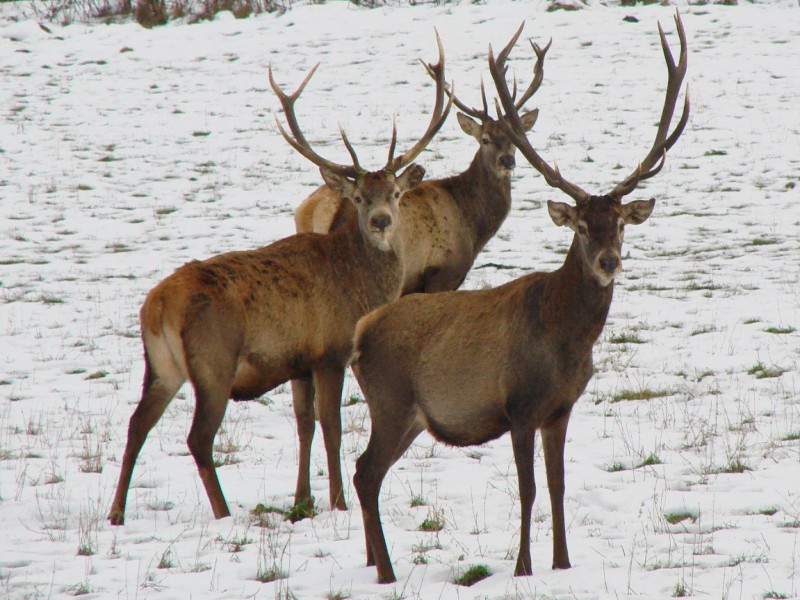
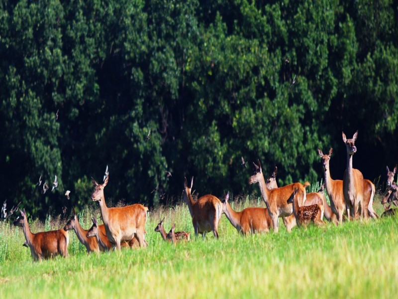
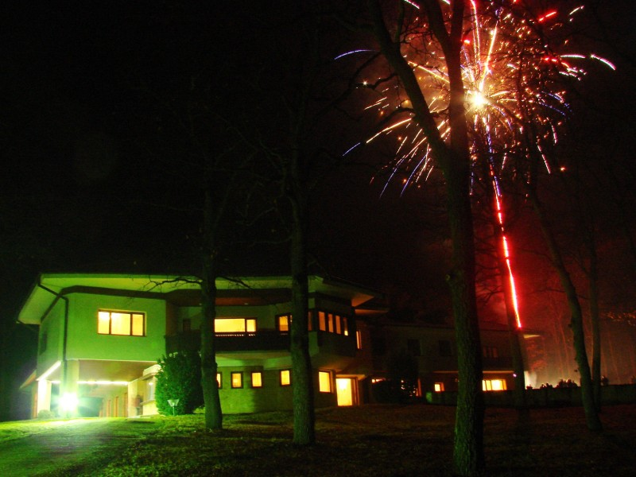
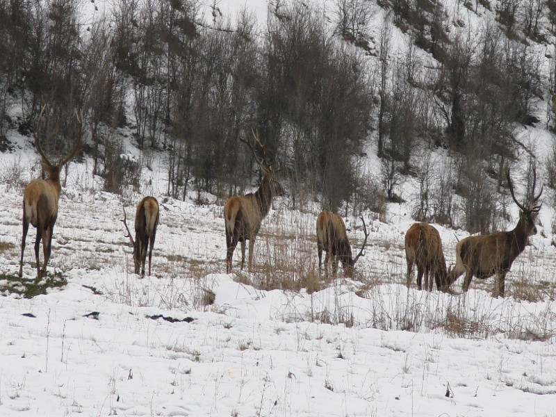
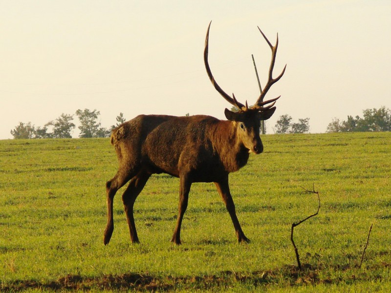
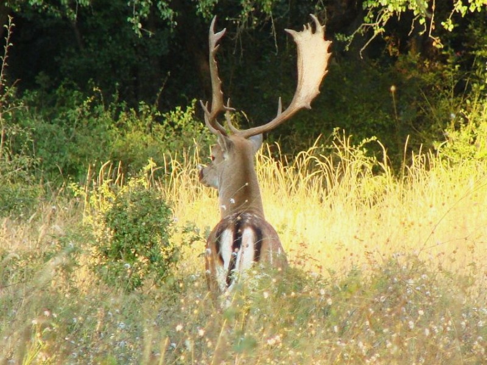
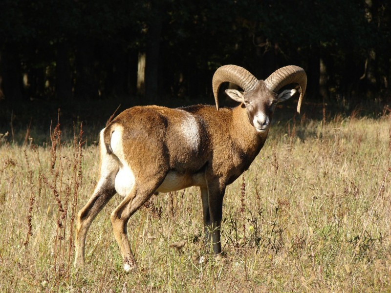